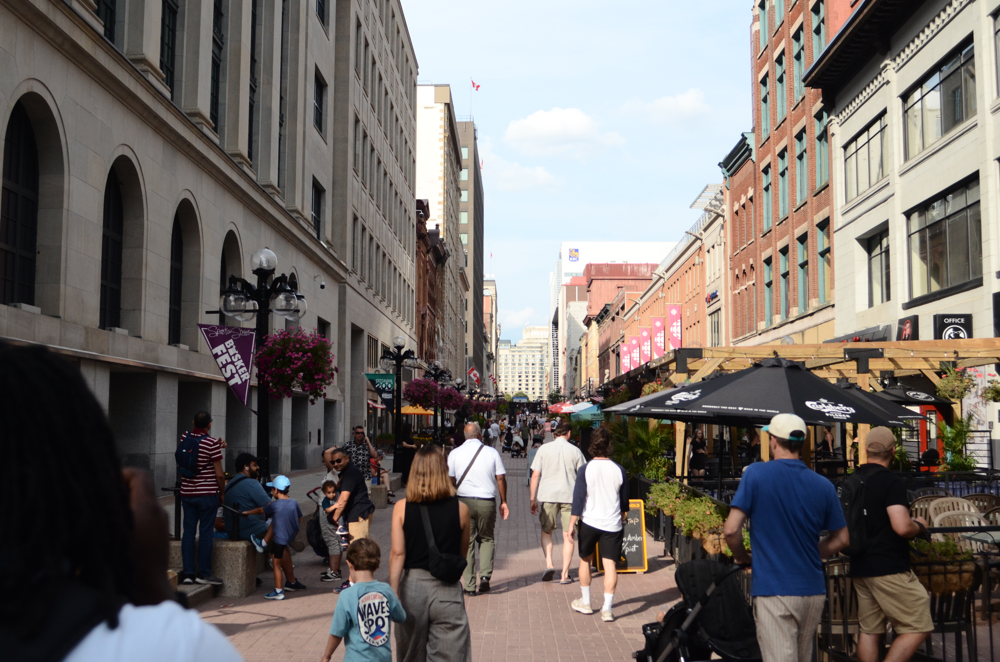
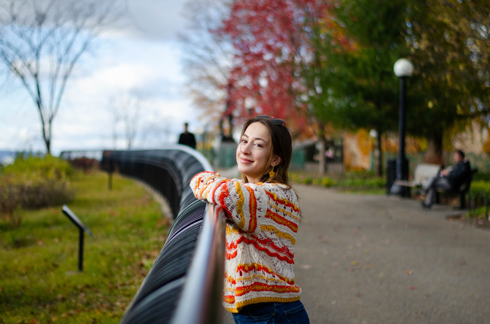
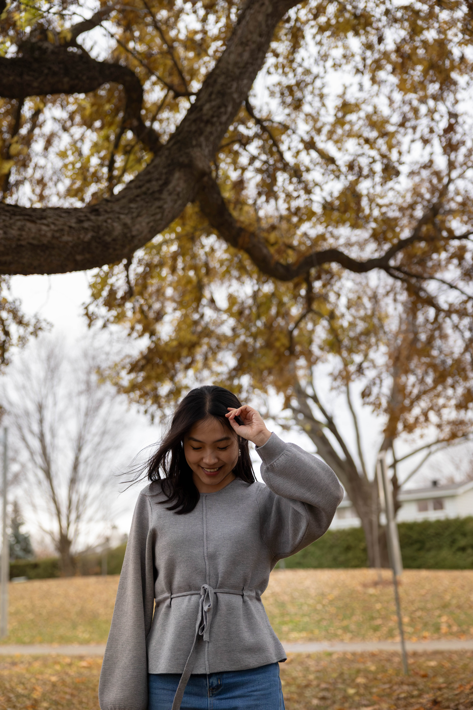
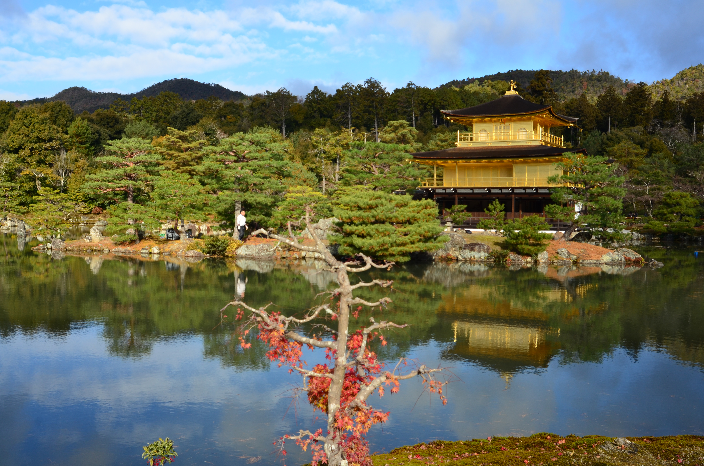
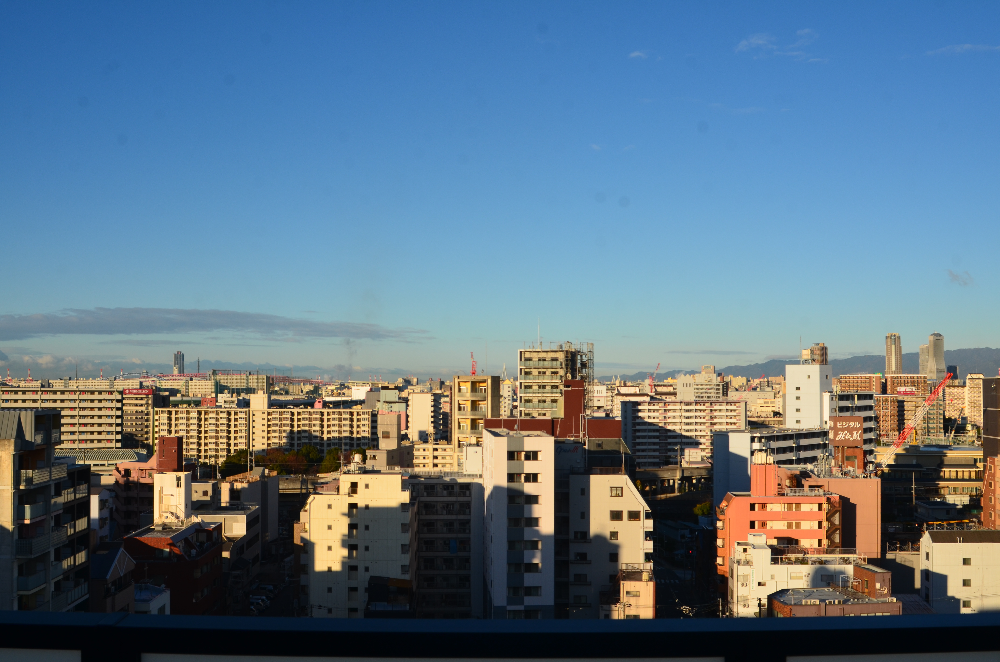

Downtown
An interesting point of view of the bustling city streets.

Take a look at my collection of recent projects: urban explorations in Ottawa, natural-light portrait sessions, and international travel photography. Learn more about Kayla's background and creative philosophy before planning your shoot.
An interesting point of view of the bustling city streets.

Portrait sessions at our local parks. Explore our portrait and event photography packages to see what is included in a custom session.


Photography capturing special moments around the world. Ready to plan your own shoot? Inquire about booking a photography session today.

